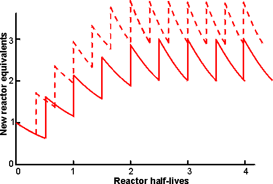

|
|
High-fructose corn syrups (HFCS)With the development of glucoamylase in the 1940s and 1950s it became a straightforward matter to produce high DE glucose syrups. However, these have shortcomings as objects of commerce: D-glucose has only about 70% of the sweetness of sucrose, on a weight basis, and is comparatively insoluble. Batches of 97 DE glucose syrup at the final commercial concentration (71% (w/w)) must be kept warm to prevent crystallisation or diluted to concentrations that are microbiologically insecure. Fructose is 30% sweeter than sucrose, on a weight basis, and twice as soluble as glucose at low temperatures so a 50% conversion of glucose to fructose overcomes both problems giving a stable syrup that is as sweet as a sucrose solution of the same concentration (see Table 4.3). The isomerisation is possible by chemical means but not economical, giving tiny yields and many by-products (e.g., 0.1 M glucose 'isomerised' with 1.22 M KOH at 5°C under nitrogen for 3.5 months gives a 5% yield of fructose but only 7% of the glucose remains unchanged, the majority being converted to various hydroxy acids). One of the triumphs of enzyme technology so far has been the development of 'glucose isomerase'. Glucose is normally isomerised to fructose during glycolysis but both sugars are phosphorylated. The use of this phosphohexose isomerase may be ruled out as a commercial enzyme because of the cost of the ATP needed to activate the glucose and because two other enzymes (hexokinase and fructose-6-phosphatase) would be needed to complete the conversion. Only an isomerase that would use underivatised glucose as its substrate would be commercially useful but, until the late 1950s, the existence of such an enzyme was not suspected. At about this time, enzymes were found that catalyse the conversion of D-xylose to an equilibrium mixture of D-xylulose and D-xylose in bacteria. When supplied with cobalt ions, these xylose isomerases were found to isomerise a-D-glucopyranose to a-D -fructofuranose (see reaction scheme [1.5]), equilibration from the more abundant b-D-glucopyranose and to the major product b-D-fructopyranose occurring naturally and non-enzymically. Now it is known that several genera of microbes, mainly bacteria, can produce such glucose isomerases: The commercial enzymes are produced by Actinoplanes missouriensis, Bacillus coagulans and various Streptomyces species; as they have specificities for glucose and fructose which are not much different from that for xylose and ways are being found to avoid the necessity of xylose as inducer, these should perhaps now no longer be considered as xylose isomerases. They are remarkably amenable enzymes in that they are resistant to thermal denaturation and will act at very high substrate concentrations, which have the additional benefit of substantially stabilising the enzymes at higher operational temperatures. The vast majority of glucose isomerases are retained within the cells that produce them but need not be separated and purified before use. All glucose isomerases are used in immobilised forms. Although differerent immobilisation methods have been used for enzymes from differerent organisms, the principles of use are very similar. Immobilisation is generally by cross-linking with glutaraldehyde, plus in some cases a protein diluent, after cell lysis or homogenisation. Originally, immobilised glucose isomerase was used in a batch process. This proved to be costly as the relative reactivity of fructose during the long residence times gave rise to significant by -product production. Also, difficulties were encountered in the removal of the added Mg2+ and Co2+ and the recovery of the catalyst. Nowadays most isomerisation is performed in PBRs (Table 5.2). They are used with high substrate concentration (35-45% dry solids, 93-97% glucose) at 55-60°C. The pH is adjusted to 7.5-8.0 using sodium carbonate and magnesium sulphate is added to maintain enzyme activity (Mg2+ and Co2+ are cofactors). The Ca2+ concentration of the glucose feedstock is usually about 25 mm, left from previous processing, and this presents a problem. Ca2+ competes successfully for the Mg2+ binding site on the enzyme, causing inhibition. At this level the substrate stream is normally made 3 mM with respect to Mg2+. At higher concentrations of calcium a Mg2+ : Ca2+ ratio of 12 is recommended. Excess Mg2+ is uneconomic as it adds to the purification as well as the isomerisation costs. The need for Co2+ has not been eliminated altogether, but the immobilisation methods now used fix the cobalt ions so that none needs to be added to the substrate streams. Table 5.2. Comparison of glucose isomerisation methods
All processes start with 45% (w/w) glucose syrup DE 97 and produce 10000 tonnes per month of 42% fructose dry syrup. Some of the improvement that may be seen for PBR productivity is due to the substantial development of this process. a Treatment with activated carbon. It is essential for efficient use of immobilised glucose isomerase that the substrate solution is adequately purified so that it is free of insoluble material and other impurities that might inactivate the enzyme by chemical (inhibitory) or physical (pore-blocking) means. In effect, this means that glucose produced by acid hydrolysis cannot be used, as its low quality necessitates extensive and costly purification. Insoluble material is removed by filtration, sometimes after treatment with flocculants, and soluble materials are removed by ion exchange resins and activated carbon beads. This done, there still remains the possibility of inhibition due to oxidised by-products caused by molecular oxygen. This may be removed by vacuum de-aeration of the substrate at the isomerisation temperature or by the addition of low concentrations (< 50 ppm) of sulphite. At equilibrium at 60°C about 51 % of the glucose in the reaction mixture is converted to fructose (see Chapter 1 for a full discussion of such reversible reactions). However, because of the excessive time taken for equilibrium to be attained and the presence of oligosaccharides in the substrate stream, most manufacturers adjust flow rates so as to produce 42-46% (w/w) fructose (leaving 47-51 % (w/w) glucose). To produce 100 tonnes (dry substance) of 42% HFCS per day, an enzyme bed volume of about 4 m3 is needed. Activity decreases, following a first-order decay equation. The half-life of most enzyme preparations is between 50 and 100 days at 55°C. Typically a batch of enzyme is discarded when the activity has fallen to an eighth of the initial value (i.e., after three half -lives). To maintain a constant fructose content in the product, the feed flow rate is adjusted according to the enzyme activity. Several reactors containing enzyme preparations of different ages are needed to maintain overall uniform production by the plant (Figure 5.10). In its lifetime 1 kg of immobilised glucose isomerase (exemplified by Novo's Sweetzyme T) will produce 10 -11 tonnes of 42% fructose syrup (dry substance).  Figure 5.10. Diagram showing the production rate of a seven-column PBR facility on start -up, assuming exponential decay of reactor activity. The columns are brought into use one at a time. At any time a maximum of six PBRs are operating in parallel, while the seventh, exhausted, reactor is being refilled with fresh biocatalyst. ——— PBR activities allowed to decay through three half-lives (to 12.5% initial activity) before replacement. The final average productivity is 2.51 times the initial productivity of one column. - - -- - - - PBR activities allowed to decay through two half-lives (to 25% initial activity) before replacement. The final average productivity is 3.23 times the initial productivity of one column. It may be seen that the final average production rate is higher when the PBRs are individually operated for shorter periods but this 29% increase in productivity is achieved at a cost of 50% more enzyme, due to the more rapid replacement of the biocatalyst in the PBRs. A shorter PBR operating time also results in a briefer start-up period and a more uniform productivity. After isomerisation, the pH of the syrup is lowered to 4 - 5 and it is purified by ion-exchange chromatography and treatment with activated carbon. Then, it is normally concentrated by evaporation to about 70% dry solids. For many purposes a 42% fructose syrup is perfectly satisfactory for use but it does not match the exacting criteria of the quality soft drink manufacturers as a replacement for sucrose in acidic soft drinks. For use in the better colas, 55% fructose is required. This is produced by using vast chromatographic columns of zeolites or the calcium salts of cation exchange resins to adsorb and separate the fructose from the other components. The fractionation process, although basically very simple, is only economic if run continuously. The fructose stream (90% (w/w) fructose, 9% glucose) is blended with 42% fructose syrups to give the 55% fructose (42% glucose) product required. The glucose-rich 'raffinate' stream may be recycled but if this is done undesirable oligosaccharides build up in the system. Immobilised glucoamylase is used in some plants to hydrolyse oligosaccharides in the raffinate; here the substrate concentration is comparatively low (around 20% dry solids) so the formation of isomaltose by the enzyme is insignificant. Clearly the need for a second large fructose enrichment plant in addition to the glucose isomerase plant is undesirable and attention is being paid to means of producing 55% fructose syrups using only the enzyme. The thermodynamics of the system favour fructose production at higher temperatures and 55% fructose syrups could be produced directly if the enzyme reactors were operated at around 95°C. The use of miscible organic co -solvents may also produce the desired effect. Both these alternatives present a more than considerable challenge to enzyme technology! The present world market for HFCS is over 5 million tonnes of which about 60% is for 55% fructose syrup with most of the remainder for 42% fructose syrup. This market is still expanding and ensures that HFCS production is the major application for immobilised-enzyme technology. The high-fructose syrups can be used to replace sucrose where sucrose is used in solution but they are inadequate to replace crystalline sucrose. Another ambition of the corn syrup industry is to produce sucrose from starch. This can be done using a combination of the enzymes phosphorylase (EC 2.4.1.1), glucose isomerase and sucrose phosphorylase (EC 2.4.1.7), but the thermodynamics do not favour the conversion so means must be found of removing sucrose from the system as soon as it is formed. This will not be easy but is achievable if the commercial pull (i.e., money available) is sufficient: phosphorylase glucose isomerase sucrose
phosphorylase A further possible approach to producing sucrose from glucose is to supply glucose at high concentrations to microbes whose response to osmotic stress is to accumulate sucrose intracellularly. Provided they are able to release sucrose without hydrolysis when the stress is released, such microbes may be the basis of totally novel processes.
This page was established in 2004 and last updated by Martin
Chaplin |